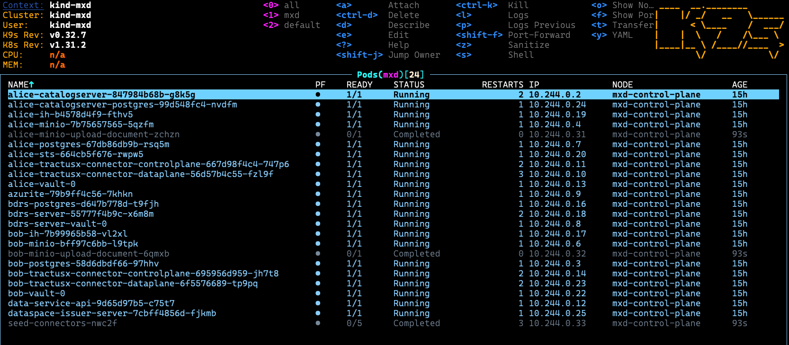
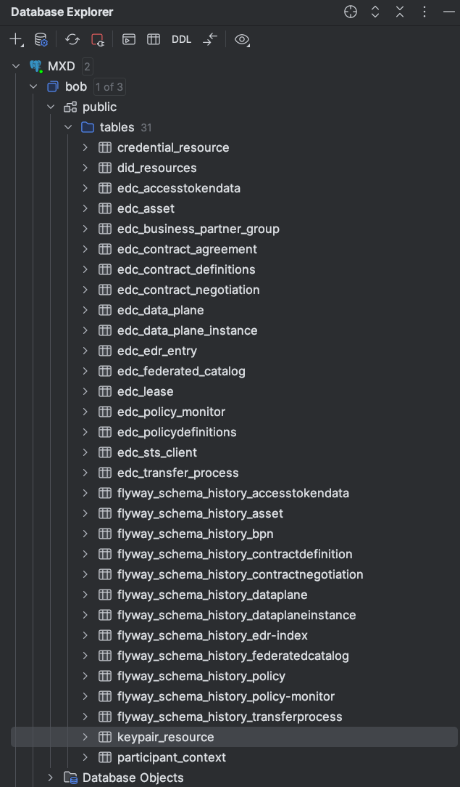

Minimum Tractus-X Dataspace¶
Deprecated
This tutorial is kept for reference. It may not match the current Eclipse Tractus-X release. All tutorials
1. Prerequisites¶
In order to run the Minimum Tractus-X Dataspace "MXD" on your local machine, please make sure the following preconditions are met.
- Install the Java Development Kit (JDK) version 17+ and set the
JAVA_HOMEenvironment variable in your system. - Have a local Kubernetes runtime ready. We've tested this setup with KinD, but other runtimes such as Minikube may work as well, we just haven't tested them. All following instructions will assume KinD.
- Install Terraform.
- a POSIX-compliant shell, e.g.
bashorzshunless stated otherwise - basic knowledge about Helm and Kubernetes
- [Optional] a cli tool to easily print logs of a K8S deployment, such as
stern - [Optional] a graphical tool to inspect your Kubernetes environment, such as Lens or k9s. Not mandatory of course, but all screenshots in this doc are created off of either of these.
- [Optional] a graphical tool to inspect Postgres databases, such as PgAdmin or JetBrains Datagrip. Screenshots in this guide are created off of DataGrip.
- [Optional] a graphical tool to send REST requests, such as Postman. This sample will include Postman collections that can be imported.
2. Basic dataspace setup¶
The "MXD" dataspace initially consists of several components: Alice and Bob (two Tractus-X EDC connectors),
a Vault instance each, a Postgres database, and an IdentityHub instance. In addition, Alice also features a catalog
server. Alice and Bob will be our dataspace participants. Each of them stores their secrets in their "private" vault
instance, and each has their own PostgreSQL server.
For the most bare-bones installation of the dataspace, execute the following commands in a shell.
2.1 Creating the cluster¶
We are using KinD as Kubernetes runtime, so all commands here relate to that. First, we need to create a cluster and install an ingress controller. We'll be using NGINX for that.
cd /path/to/tutorial-resources/mxd
kind create cluster -n mxd --config kind.config.yaml
# the next step is specific to KinD and will be different for other Kubernetes runtimes!
kubectl apply -f https://raw.githubusercontent.com/kubernetes/ingress-nginx/main/deploy/static/provider/kind/deploy.yaml
# wait until the ingress controller is ready
kubectl wait --namespace ingress-nginx \
--for=condition=ready pod \
--selector=app.kubernetes.io/component=controller \
--timeout=90s
to verify that the cluster was created correctly, please run kind get clusters in your shell and verify that mxd is
printed.
Notice that the kubectl apply command deploys a Kubernetes Ingress Controller to the cluster and is required to reach
our applications from outside the cluster. Specifically, it deploys an NGINX ingress controller. Notice also, that the
command is specific to KinD and will likely not work on other Kubernetes runtimes (minikube, ...) or with other
ingress controllers!
2.2 Build runtime images¶
Next, we need to build Docker images for all the runtimes we are using. To do that, run the following commands in your shell:
this should compile the Java code and build Docker images out of all runtimes. Optionally inspect your image cache with
docker images Your host Docker environment and KinD don't share a Docker context, so we need to load the images into
KinD:
kind load docker-image --name mxd data-service-api tx-identityhub tx-catalog-server tx-issuerservice
2.3 Bring up the data space¶
We are using Terraform to deploy all our resources in the cluster:
cd /path/to/tutorial-resources/mxd
terraform init
terraform apply
# type "yes" and press enter when prompted to do so
# alternatively execute terraform apply -auto-approve
Wait. Then wait some more. It will take a couple of minutes until all services are deployed and booted up. If your
machine is a potato, it'll take a bit longer. Just get a coffee. Eventually, it should look similar to this, note that
the resources get deployed into the mxd namespace, so depending on the tool you use to view them, you may need to
switch.

2.4 JVM crashes with SIGILL on ARM platforms¶
We have noticed that the JVM inside the Docker container sometimes crashes with a SIGILL signal right
away without even starting the runtime. So far we've only seen this on ARM platforms such as Apple Silicon. The UseSVE
option seems to mitigate this. If you are affected by this, please
try enabling the useSVE switch:
This will add the -XX:UseSVE=0 switch to the JAVA_TOOL_OPTIONS in all runtimes, enabling the Scalable Vector
Extensions that are available on ARM processors. Alternatively, you can also set the useSVE = true variable in a
*.tfvars file, cf. documentation.
Important note: on non-ARM platforms, the -XX:UseSVE=0 VM option is not recognized and will crash the JVM!
2.5 Inspect terraform output¶
After the terraform command has successfully completed, it will output a few configuration and setup values
that we will need in later steps. Please note that some values will be different on your local system.
Outputs:
alice-database-credentials = {
"database-host" = "10.96.78.229"
"database-port" = 5432
"database-url" = "10.96.78.229:5432"
"instance-name" = "bob"
}
alice-node-ip = "10.96.88.185"
alice-urls = {
"health" = "http://localhost/alice/health"
"management" = "http://localhost/alice/management/v3"
"proxy" = "http://localhost/alice/proxy"
"public" = "http://localhost/alice/api/public"
}
bob-database-credentials = {
"database-host" = "10.96.9.11"
"database-port" = 5432
"database-url" = "10.96.9.11:5432"
"instance-name" = "alice"
}
bob-node-ip = "10.96.196.216"
bob-urls = {
"health" = "http://localhost/bob/health"
"management" = "http://localhost/bob/management/v3"
"proxy" = "http://localhost/bob/proxy"
"public" = "http://localhost/bob/api/public"
}
2.6 Inspect the databases¶
None of the services and applications that were deployed in the previous step are accessible from outside the Kubernetes cluster. That means, for example, the Postgres database cannot be reached out-of-the-box. Every participant has their own PostgreSQL database, and Alice's Catalog Server also has its own, so the following steps need to be repeated for every instance.
There are several ways to enable access to those services (Load balancers, Ingresses, etc.) but for the sake of simplicity we will use a plain Kubernetes port-forwarding.
This makes Bob's PostgreSQL database accessible at localhost:5432, username = bob, password = bob.
Note that the actual pod name will be slightly different in your local cluster.
Then, using your favorite DB viewer, connect to the Postgres server at jdbc:postgresql://localhost:5432/ using
user=bob and password=bob:

Every service in the cluster has their own PostgreSQL instance, containing tables from individual services such as Control Plane, Federated Catalog Cache and Identity Hub. Feel free to inspect the tables, some of them already have data in them which got automatically seeded assets, policies and contract definitions as well as IdentityHub data.
2.6 Verify your local installation¶
In order to check that the connectors were deployed successfully, please execute the following commands in a shell:
curl -X GET http://localhost/bob/health/api/check/liveness
curl -X GET http://localhost/alice/health/api/check/liveness
which should return something similar to this, the important part being the isSystemHealthy: true bit. Pro tip: pipe
the output to jq if you have it installed.
{
"componentResults": [
{
"failure": null,
"component": "Observability API",
"isHealthy": true
},
{
"failure": null,
"component": "FCC Query API",
"isHealthy": true
},
{
"failure": null,
"component": "Hashicorp Vault Health",
"isHealthy": true
}
],
"isSystemHealthy": true
}
This shows that there currently are three components in Bobs Control Plane that contribute to the system liveness state. Once we've established the basic readiness of our connectors, we can move on to inspect a few data items. Bob does not have any seed data, so we will use Alice for this step:
curl -X POST http://localhost/alice/management/v3/assets/request -H "x-api-key: password" -H "content-type: application/json" | jq
this queries the /assets endpoint returning the entire list of assets that alice currently maintains. You should see
something like
[
{
"@id": "asset-1",
"@type": "Asset",
"properties": {
"description": "MXD Asset 1: this Asset is available to holders of the DataExchangeGovernance credential",
"id": "asset-1"
},
"dataAddress": {
"@type": "DataAddress",
"proxyPath": "true",
"type": "HttpData",
"proxyQueryParams": "true",
"baseUrl": "http://data-service-api:8080/v1/data"
},
"@context": {
"tx": "https://w3id.org/tractusx/v0.0.1/ns/",
"tx-auth": "https://w3id.org/tractusx/auth/",
"cx-policy": "https://w3id.org/catenax/policy/",
"@vocab": "https://w3id.org/edc/v0.0.1/ns/",
"edc": "https://w3id.org/edc/v0.0.1/ns/",
"odrl": "http://www.w3.org/ns/odrl/2/"
}
},
{
"@id": "asset-2",
"@type": "Asset",
"properties": {
"description": "MXD Asset 2: this Asset is available to holders of the DataExchangeGovernance credential",
"id": "asset-2"
},
"dataAddress": {
"@type": "DataAddress",
"proxyPath": "true",
"type": "HttpData",
"proxyQueryParams": "true",
"baseUrl": "http://data-service-api:8080/v1/data"
},
"@context": {
"tx": "https://w3id.org/tractusx/v0.0.1/ns/",
"tx-auth": "https://w3id.org/tractusx/auth/",
"cx-policy": "https://w3id.org/catenax/policy/",
"@vocab": "https://w3id.org/edc/v0.0.1/ns/",
"edc": "https://w3id.org/edc/v0.0.1/ns/",
"odrl": "http://www.w3.org/ns/odrl/2/"
}
},
{
"@id": "asset-3",
"@type": "Asset",
"properties": {
"description": "MXD Asset 3: this Demo Asset is only available to holders of the Dismantler credential",
"id": "asset-3"
},
"dataAddress": {
"@type": "DataAddress",
"proxyPath": "true",
"type": "HttpData",
"proxyQueryParams": "true",
"baseUrl": "http://data-service-api:8080/v1/data"
},
"@context": {
"tx": "https://w3id.org/tractusx/v0.0.1/ns/",
"tx-auth": "https://w3id.org/tractusx/auth/",
"cx-policy": "https://w3id.org/catenax/policy/",
"@vocab": "https://w3id.org/edc/v0.0.1/ns/",
"edc": "https://w3id.org/edc/v0.0.1/ns/",
"odrl": "http://www.w3.org/ns/odrl/2/"
}
}
]
Note: the same thing can be done to inspect policies and contract definitions. The respective curl commands are:
# policies:
curl -X POST http://localhost/alice/management/v2/policydefinitions/request -H "x-api-key: password" -H "content-type: application/json" | jq
# contract defs:
curl -X POST http://localhost/alice/management/v2/contractdefinitions/request -H "x-api-key: password" -H "content-type: application/json" | jq
2.7 Use Postman collections to communicate with your services¶
There are several collections in the mxd/postman folder:
management_api_tests.json: contains REST requests that are intended for use in GitHub actions, for E2E testing. Not intended for end-user consumption!mxd-management-apis.json: contains requests that are intended to be used by end-users to walk through a contract negotiation and a transfer process sequence. This also contains requests for IdentityHub's API, e.g. to inspect credentials.mxd-seed.json: contains requests to insert seed data to the different services, like assets, policies, credentials etc. Not intended for end-user consumption!
A note on IdentityHub APIs¶
IdentityHub also has a management API called the "Identity API" that offers endpoints to add key pairs, credentials, inspect DID documents, etc. However, because IdentityHub is designed to be a multi-tenant application (although tenants are called "participant contexts"), the Identity API comes with its own authn/authz model. For the sake of simplicity, all requests listed in this Postman collection use the "super-user" token. For details, please follow the aforementioned link.
3. Tutorials¶
- Restrict Asset Using Access Policies
- Business Partner Group Policy
- File Transfer: Azure Blob Storage to Azure Blob Storage
- File Transfer: Azure Blob Storage to Amazon S3
- File Transfer: Amazon S3 to Amazon S3
- File Transfer: Amazon S3 to Azure Blob Storage
- Simplify negotiation and transfer using the EDR API
- Credential Issuance